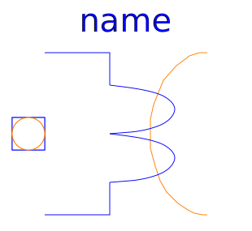

Basic components of the FundamentalWave library for modeling magnetic circuits. Machine specific components are located at Machines.Components.
| Name | Description |
|---|---|
| Magnetic ground | |
| Salient reluctance | |
| Salient Permeance | |
| Constant loss model under sinusoidal magnetic conditions | |
|  SinglePhaseElectroMagneticConverter | Single phase electro magnetic converter |
| MultiPhaseElectroMagneticConverter | Multi phase electro magnetic converter |
| Idle running branch | |
| Short cut branch | |
| Crossing of two branches |